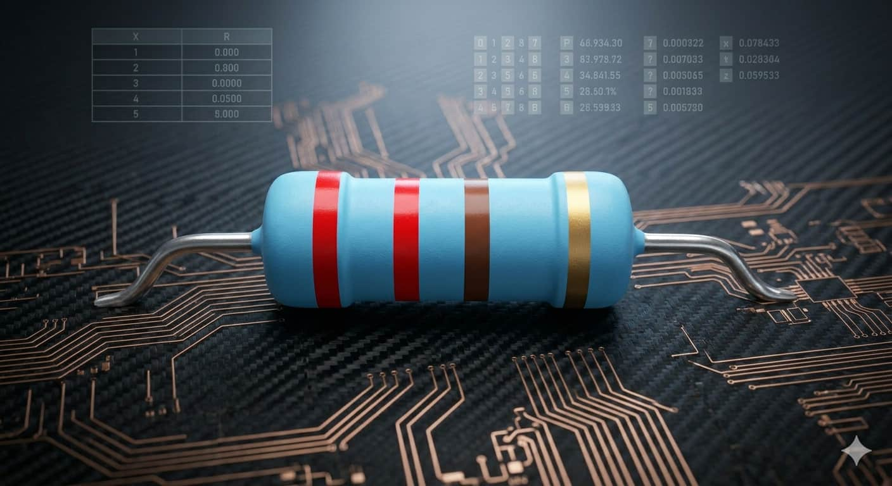
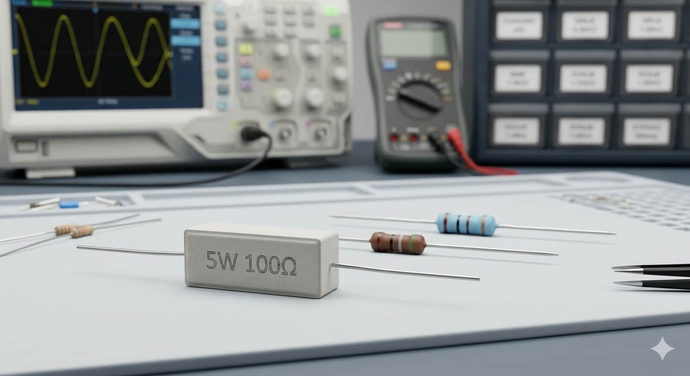
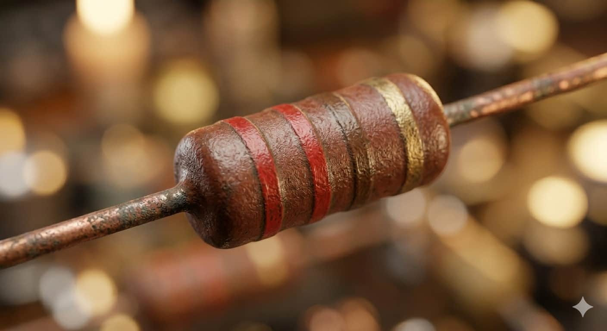
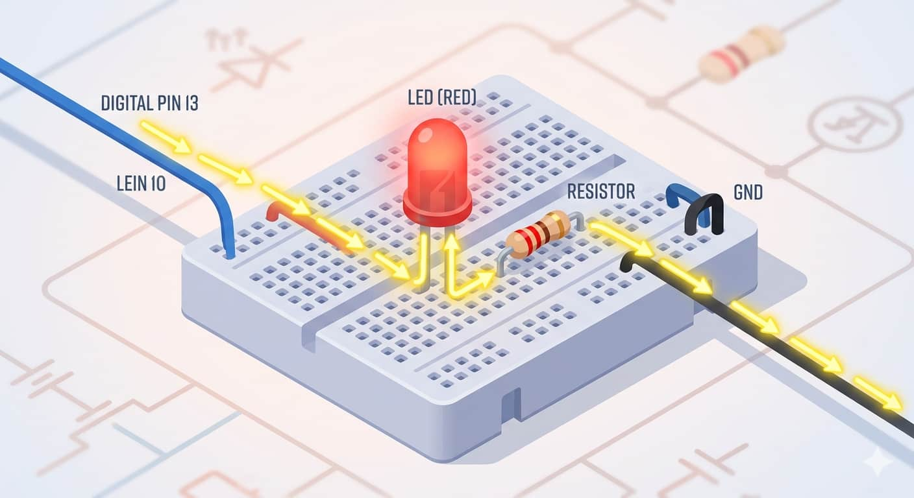

Valor Óhmico (Ω)
Representa la "fuerza" con la que el componente se opone a la corriente. Es la unidad fundamental de medida.

Imagina que la electricidad es un río caudaloso. La resistencia actúa como una represa o una tubería estrecha que limita cuánta corriente puede pasar, protegiendo así los componentes más delicados de tu circuito.
Representa la "fuerza" con la que el componente se opone a la corriente. Es la unidad fundamental de medida.

Las bandas de colores indican su precisión. Una banda dorada significa que el valor es exacto dentro de un 5%.

Indica cuánto calor puede soportar. En Arduino, lo más común es usar resistencias de 1/4 de Watt.

A nivel atómico, es como intentar correr en una habitación llena de gente: chocas con otros, pierdes velocidad y generas calor. Esta dificultad para avanzar es la resistencia. Es exactamente igual a apretar una manguera de jardín: entre más aprietas, menos agua sale.
La resistencia es la pareja inseparable del LED, ya que absorbe el exceso de energía para evitar que este se funda en milisegundos.

En un proyecto típico, conectamos el Pin 13 al ánodo del LED, y del cátodo vamos a una resistencia de 220Ω que finalmente llega a GND.
Este programa permite encender y apagar un LED de forma intermitente cada segundo:
void setup() { pinMode(13, OUTPUT); }
void loop() {
digitalWrite(13, HIGH); delay(1000);
digitalWrite(13, LOW); delay(1000);
}
Aprende a leer el código de colores y profundizar en su uso con este recurso: